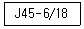
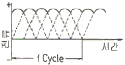
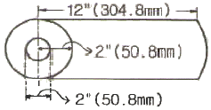

자기비파괴검사기사 (2016-08-21 기출문제)
1과목: 비파괴검사 개론
1. 자분탐상검사의 신뢰도를 향상시킬수 있는 방법이 아닌 것은?
- 교육과 훈련을 통하여 시험자의 기량을 향상시킨다.
- 검사에 적합한 규격을 선정하여 바르게 적용한다.
- 결함의 검출감도를 높이기 위하여 가급적 높은 전류로 검사한다.
- 생산공정, 예상되는 결함의 종류 등에 따라 검사에 적합한 자화방법을 선정한다.
(정답률: 91%)

2. 튜브, 관 같은 부품의 종방향 용접부 내부결함을 신속하게 측정하기 위한 비파괴검사법으로 가장 적합한 조합은?
- 자분탐상시험, 누설검사
- 초음파탐상시험, 침투탐상시험
- 방사선투과시험, 자분탐상시험
- 초음파탐상시험, 와전류탐상시험
(정답률: 71%)
3. 방사선투과검사를 할 때 투과도계는 원칙적으로 어디에 위치해야 하는가?
- 시험체의 선원측에 위치
- 시험체의 필름측에 위치
- 시험자와 선원측 사이에 위치
- 필름 뒤에 위치
(정답률: 60%)
4. 비파괴검사 방법 중 제품이나 부품의 전체적인 모니터링 방법에 사용되는 것은?
- 스트레인 측정
- 방사선투과검사
- 자분탐상검사
- 침투탐상검사
(정답률: 74%)
5. 다음 중 자외선의 파장 3650Å과 동일한 것은?
- 365nm
- 3650m
- 36.5nm
- 3.65nm
(정답률: 67%)
6. 켈멧(kelmet)에 대한 설명으로 옳은 것은?
- Cu - Zn계 황동으로 볼트, 너트 재료이다.
- Cu - Zn계 황동으로 장식용으로 사용한다
- Cu - Al계 청동으로 내마모성이 우수하다.
- Cu - Pb계 청동으로 베어링용으로 사용한다.
(정답률: 82%)
7. 다공질 금속의 원리적인 제조방법에 대한 설명으로 틀린 것은?
- 금속분말이나 단섬유를 소결하는 분말야금방법
- 용탕금속 중에 발포제를 직접 첨가해서 발포시키는 방법
- 중력 상태에서 용융금속 내의 가스를 뽑아내는 방법
- 발포재료 등과 같이 밀도가 작은 재료를 금속과 복합화 시키는 방법
(정답률: 61%)
8. 일반적으로 상용한도가 300℃ 까지 사용할 수 있는 열전대는?
- Pt - PtㆍRh
- Cu - Constantan
- Chromel - Alumel
- Fe - Constantan
(정답률: 37%)
9. 백주철을 탈탄 열처리하여 순철에 가까운 페라이트(ferrite) 가지로 해서 연성을 갖게 한 주철은?
- 백심 가단주철
- 애시큘러 주철
- 흑심 가단주철
- 펄라이트 가단주철
(정답률: 72%)
10. 탄소강에서 망간(Mn)의 영향으로 옳은 것은?
- 저온취성의 원인이 된다.
- 강의 유동성을 나쁘게 한다.
- 고온에서 결정립 성장을 억제시킨다.
- 결정립의 크기를 증가시키고 소성을 감소시킨다.
(정답률: 47%)
11. 내식성 알루미늄합금에 어떤 원소가 첨가되면 내식성을 악화시키지 않고 소량만으로도 강도를 개선할 수 있는가?
- Fe
- Ni
- Cu
- Mg
(정답률: 31%)
12. 철강에 합금원소를 첨가하였을 때의 일반적인 효과로 틀린 것은?
- 소성가공성 및 내식성이 저하한다.
- 결정립의 미세화에 따른 강인성이 향상된다.
- 합금원소에 으한 기지의 고용강화가 일어난다.
- 변태속도의 변화에 따른 열처리 효과가 향상된다.
(정답률: 57%)
13. 10g의 Au-Ag 합금에 Ag가 5% 함유되어 있을 때, Au의 순도(K, carat)는?
- 20.6K
- 22.8K
- 23.6K
- 24.8K
(정답률: 73%)
14. 다음 중 강의 표면경화법이 아닌 것은?
- 오스템퍼링
- 화염경화법
- 침탄처리법
- 질화처리법
(정답률: 55%)
15. 죠미니 시험 결과 [보기]와 같은 결과에 대한 설명으로 옳은 것은?

- 퀜칭 끝단으로부터 떨어진 거리가 45mm사이에 있는 어떤 점에서의 경도 값이 6~18HB에 도달한 것을 의미한다.
- 퀜칭 끝단으로부터 떨어진 거리가 6~18mm사이에 있는 어떤 점에서의 경도 값이 45HB에 도달한 것을 의미한다.
- 퀜칭 끝단으로부터 떨어진 거리가 45mm사이에 있는 어떤 점에서의 경도 값이 6~18HBC에 도달한 것을 의미한다.
- 퀜칭 끝단으로부터 떨어진 거리가 6~18mm사이에 있는 어떤 점에서의 경도 값이 45HBC에 도달한 것을 의미한다.
(정답률: 37%)
16. 겹치기이음, T이음, 모서리이음에 있어서 거의 직교하는 두 면을 결합하는 3각형 단면의 용착부를 갖는 용접부는?
- 필릿 용접
- 비드 용접
- 맞대기 용접
- 플러그 용접
(정답률: 82%)
17. 다음 중 대전류 용접이 가능하고 아크 효율이 95% 이상으로 높으며, 용착 속도가 빠르고 용입이 깊은 용접법은?
- 피복 아크 용접
- 탄산 가스 아크 용접
- 서브머지드 아크 용접
- 불활성 가스 아크 용접
(정답률: 73%)
18. 다음 중 구조상 결함이 아닌 것은?
- 기공
- 변형
- 균열
- 언더컷
(정답률: 75%)
19. 교류 용접기는 무부하 전압이 비교적 높기 때문에 감전의 위험이 있으므로 용접사를 보호하기 위해 부착ㅎ는 장치는?
- 무부하 장치
- 핫 스타트 장치
- 원격 제어 장치
- 전격 방지 장치
(정답률: 84%)
20. 피복아크용접에서 아크전압이 20V, 아크전류는 150A, 용접속도가 15cm/min 일 때 용접입열은 몇 Joule/cm 인가?
- 12000
- 22000
- 24000
- 45000
(정답률: 71%)
2과목: 자기탐상검사 원리
21. 일루미늄 등의 비철금속은 일반적으로 자분탐상시험이 어렵다. 그 이유를 바르게 설명한 것은?
- 잔류 자기가 없기 때문이다.
- 자기 반발력이 매우 크기 때문이다.
- 자계 내에서 자화되는 정도가 작기 때문이다.
- 자계 내에서 전혀 자화되지 않기 때문이다.
(정답률: 62%)
22. 30[Oe]에서 자분모양이 나타나는 A형 표준시험편을 사용하여 36[Oe]의 자계의 세기를 걸어주었을 때의 자화전류치[A]는 얼마인가? (단, A형 표준시험편을 시험체에 부착하고 자화전류를 증가시켰을 때 자분모양이 나타난 자화전류치는 5A이다.)
- 2
- 4
- 6
- 8
(정답률: 83%)
23. 자기탐상시험을 적용할 수 있는 재료는?
- 철, 코발트, 니켈
- 구리, 철, 코발트
- 구리, 철, 니켈
- 코발트, 아연, 구리
(정답률: 81%)
24. 다음 중 보자성이 낮은 거친 시험체를 검사하기에 가장 적합한 자분탐상 시험방법은?
- 습식 잔류법
- 습식 연속법
- 건식 잔류법
- 건식 연속법
(정답률: 34%)
25. 유한 길이를 갖는 솔레노이드에 의한 자계의 설명으로 틀린 것은?
- 자계의 세기는 코일의 내벽에 가까울수록 약해진다.
- 코일 속 자계의 세기는 코일의 길이와 지름이 커질수록 약해진다.
- 코일 속 자계의 세기는 코일의 감은 수에 비례한다.
- 코일 속 자계의 세기는 코일에 흐르는 전류에 비례한다.
(정답률: 42%)
26. 금속원자들이 모여 형성하는 가장 작은 영구자석을 무엇이라 하는가?
- 격자구조(lattice structure)
- 자구(magnetic domain)
- spin
- band 구조
(정답률: 87%)
27. 자분탐상검사 후 반드시 탈자를 해야 하는 경우는?
- 외부 누설 자계가 없거나 잔류자기 영향을 받지 않는 대형 주강품인 경우
- 시험품이 큐리점 이상으로 열처리 된 경우
- 잔류자기가 계측기 작동에 영향을 미칠 우려가 있을 경우
- 시험품이 연철이거나 낮은 보자성을 갖는 경우
(정답률: 77%)
28. 다음 중 자력선의 세기를 나타낸 용어는?
- 자장 강도
- 강자성
- 항자력
- 자속밀도
(정답률: 38%)
29. 다음 중 일반적인 자분탐상 시험원리에서 기계가공 면의 피로균열검사에 가장 알맞은 시험방법은?
- 교류 - 건식법
- 교류 - 습식법
- 반파정류 - 건식법
- 반파정류 - 습식법
(정답률: 57%)
30. 반파정류(HWAC)를 이용하여 자분탐상검사를 할 경우의 특성이 아닌 것은?
- 자분의 이동성이 좋다.
- 표면하 불연속 검출에 우수하다.
- 동일 전류에서 자속밀도가 높다.
- 비교적 탈자가 수월하다.
(정답률: 42%)
31. 강자성체가 상자성체로 변하게 되는 한계 물리량은?
- 자구의 크기
- 큐리 온도
- 초전도성
- 핵 spin의 크기
(정답률: 50%)
32. 시험체에 자화강도가 너무 높으면 나타나는 현상은?
- 시험체에 아크의 발생에 의한 결함이 생긴다.
- 결함 외에 백그라운드에도 많은 자분이 부착되어 자분모양의 식별이 곤란한다.
- 잔류법을 사용할 수 없다.
- 탐상 후 탈자가 불가능하다.
(정답률: 76%)
33. 다음 중 전처리를 해야하는 목적이 아닌 것은?
- 탐상시험에 관계되는 여러 조작으로부터 시험품의 손상을 방지한다.
- 결함부에 자분 부착량을 늘리어 결함지시모양의 관찰 및 미세결함의 검출을 쉽게 한다.
- 표면 상태가 좋으면 결함의 검출 감도가 저하되기 때문이다.
- 결함 이외의 부분에 부착되는 자분량을 가급적 적게하여 결함지시모양의 관찰을 쉽게한다.
(정답률: 81%)
34. 프로드법에 의한 탈자의 방법이 맞는 것은?
- 자화전류 직류-직류탈자, 자화전류 교류-교류탈자
- 자화전류 직류-교류탈자, 자화전류 교류-교류탈자
- 자화전류 직류-직류탈자, 자화전류 교류-직류탈자
- 자화전류 직류-교류탈자, 자화전류 교류-직류탈자
(정답률: 50%)
35. 다음중 누설자속의 발생에 영향을 미치는 인자로써 가장 영향이 적은 것은?
- 자화방향과 결함길이 방향과의 각도
- 자성체의 재질
- 자화의 강도
- 자성체의 크기
(정답률: 54%)
36. 자분탐상시험의 탈자 방법에 대한 설명으로 틀린 것은?
- 관통형은 시험체를 코일 속을 지나 이동시킴으로써 코일의 자계로부터 거리를 멀리 하는 방식이다.
- 평면형은 시험체를 전자석이 만들어내는 자계의 상부 중앙에 일정시간 유지시키는 방식이다.
- 극간형은 시험체를 전자석의 자극 사이에 놓고 전자석의 전류를 감쇠시키는 방식이다.
- 직류식 탈자는 표피효과가 상대적으로 적기때문에 시험체 직하까지 탈자가 가능하다.
(정답률: 50%)
37. 자분의 설명 중 옳은 것은?
- 회색이나 백색은 산화 자분이다.
- 갈색이나 흑색 자분은 환원 자분이다.
- 습식자분의 입자 크기는 건식자분보다 크다.
- 큰 결함의 검출에는 임자가 큰 자분이 좋다.
(정답률: 66%)
38. 도체의 표층부 결함이나 부식으로 얇아진 판두께의 변화를 감지 할 수 있는 검사방법은?
- 누설 시험법(LeaKage Test)
- 자분탐상 검사(Magnetic Particle Testing)
- 자기에나멜검사(Porcelain Enamel Test)
- 잔위차 시험법(Electrical Potential Drop Test)
(정답률: 60%)
39. 그림은 어떤 전류 파형인가?

- 2상 직류
- 3상 정류교류
- 단상 정류교류
- 단상 정류직류
(정답률: 46%)
40. 다음 사항 중 자화곡선의변화와 관계없는 것은?
- 탄소 함유량
- 동위원소 함유량
- 가공상태
- 열처리
(정답률: 71%)
3과목: 자기탐상검사 시험
41. 자분의 적용시기에 따라 분류한 것으로 틀린 것은?
- 연속법은 저탄소강과 낮은 보자력을 가진 부품에 좋은 감도를 나타낸다.
- 잔류자기법은 자화와 자분적용의 두 구분된 단계를 가진다.
- 잔류기법은 연속법에 비해 자화 정도가 약하다.
- 연속법은 검사품의 자기포화점 이상의 자장이 필요하다.
(정답률: 63%)
42. 그림의 봉을 원형자화법에 의해 자분탐상검사를 할 때 소요되는 전류는 몇 A 인가?

- 100
- 400
- 3000
- 12000
(정답률: 44%)
43. 습식용 자분을 분산매에 분산시키기 위하여 사용하는 분산용 첨가제가 아닌 것은?
- 계면 활성제
- 방청제
- 소포제
- 감압제
(정답률: 56%)
44. 자분탐상검사를 위해 다음 중에서 가장 먼저 고려해야 할 것은?
- 검사품의 자기적 성질 여부
- 결함과 자장의 방향
- 검사품의 표면 상태
- 검사품의 형상과 크기
(정답률: 71%)
45. 자분탐상시험을 할 때 주의사항 중 틀린 것은?
- 용접부의 시험은 최종 열처리 후에 시행한다.
- 압력용기의 내압시험 후 자화방법은 원칙적으로 프로드법을 사용한다.
- 잔류법 적용 시는 다른 시험품과의 접촉에 주의한다.
- 몇 개의 시험품을 동시 시험할 때는 시험품의 배치, 자화방법 및 자화전류를 고려한다.
(정답률: 60%)
46. 다음 중 탄소 함유량이 높은 공구강, 스프링강과 같이 시험체의 보자성이 큰 경우에 적용되며 표면의 불연속 검출에 국한되는 자분탐상 검사방법은?
- 잔류법
- 연속법
- 습식법
- 건식법
(정답률: 60%)
47. 직류를 사용하여 결함을 검출한 후, 그 결함이 표면결함인지 표면하 결함인지를 확인하는 방법으로 옳은 것은?
- 탈자 후 재검사한다.
- Surge법으로 재검사한다.
- 교류로 재검사한다.
- 높은 전류로 재검사한다.
(정답률: 81%)
48. 두 개의 검사체가 서로 부딪치거나 마찰되었을 때 한면 또는 양면에 자화가 발생한다. 이 때 자분을 뿌리게 도면 지시가 나타나게 된다. 이러한 형태의 지시를 무엇이라 하는가?
- 결함지시
- 유사자분모양
- 자기펜자국
- 불연속지시
(정답률: 61%)
49. 자분탐상검사 중 시험체에 전극을 접촉시켜 통전함에 따라 시험체에 자계를 형성하는 방식이 아닌 것은?
- 극간법
- 프로드법
- 축통전법
- 직각통전법
(정답률: 54%)
50. 냉간가공에서 생긴 재질경계지시는?
- 탈자한 후 재검사하면 나타나지 않는다.
- 풀림 후 재검사하면 나타나지 않는다.
- 반대방향으로 재검사하면 나타나지 않는다.
- 전류량을 높여서 재검사하면 나타나지 않는다.
(정답률: 55%)
51. 다음 중 일반적으로 전류관통법으로 검사할 때 가장 깊이 존재하는 인공결함을 검출할 수 있는 자화전류와 자분의 조합으로 옳은 것은?
- 교류-건식
- 교류-습식
- 직류-건식
- 직류-습식
(정답률: 70%)
52. 극간식 자분탐상장치의 자화능력 또는 장치의 경년변화를 조사할 목적으로 전자속을 측정하는데 사용되는 기구는?
- 교류자속계
- 분류기
- 전류계
- 변류기
(정답률: 65%)
53. 자분탐상검사에서 자분지시의 형성에 가장 적게 영향을 미치는 것은?
- 자장(magnetic field)의 방향과 세기
- 결함의 형태 및 방향
- 시험체의 투자율
- 시험체의 밀도
(정답률: 73%)
54. 자외선등의 강도를 측정하는데 가장 널리 사용되는 원소는?
- 셀레늄(Se)
- 세슘(Se)
- 바륨(Ba)
- 코발트(Co)
(정답률: 48%)
55. 습식자분에 있어 분산 매질의 성질로 적당하지 않은 것은?
- 휘발성이 커야 한다.
- 적심성이 커야 한다.
- 점성이 작아야 한다.
- 색 또는 형광을 띄지 않아야 한다.
(정답률: 65%)
56. 다음 중 표면직하 결함(Subsurface defect)을 검출하는데 검출능이 가장 높은 자화전류의 정류방식은?
- 단상 자기정류
- 단상 전파정류
- 삼상 반파정류
- 삼상 전파정류
(정답률: 59%)
57. 다음 중 국부적인 자계나 누설자속 밀도를 측정하는 검출기의 명칭은?
- Inspection Coil
- EMAT
- Tesla metrer
- Flux Induced Coil
(정답률: 75%)
58. 다음 중 선형자계가 형성되는 것은?
- 코일법
- 프로드법
- 전류관통법
- 직각통전법
(정답률: 78%)
59. 강자성 물질의 결함을 건식법으로 검출할 때 가장 발견하기 어려운 것은?
- 아주 좁은 균열
- 흩어져 있는 내부 기공
- 단조 겹침
- 언더컷(undercut)
(정답률: 50%)
60. 형광자분탐상시험 시 사용되는 자외선등의 가장 이상적인 파장은?
- 3⑤nm
- 3654nm
- 425nm
- 510nm
(정답률: 47%)
4과목: 자기탐상검사 규격
61. 철강 재료의 자분탐상 시험방법 및 자분모양의 분류(KS D0213)에 규정한 의사모양에 해당되지 않는 것은?
- 오염지시
- 자극지시
- 자기펜자국
- 표면거칠기지시
(정답률: 58%)
62. 보일러 및 압력용기에 대한 자분탐상검사(ASME Sec.V, Art.7)에서 규정한 자화 방법에 해당되지 않은 것은?
- 프로드법
- 선형자화법
- 요크법
- 다중주파수법
(정답률: 67%)
63. 철강 재료의 자분탐상 시험방법 및 자분모양의 분류(KS D0213)에 의거 선상의 자분모양을 설명한 것은?
- 원형상의 자분모양 이외의 것
- 자분모양의 서로의 거리가 2mm 이하인 것
- 균열로 식별된 자분모양
- 자분모양에서 그 길이가 나비의 3배 이상인 것
(정답률: 63%)
64. 철강 재료의 자분탐상 시험방법 및 자분모양의 분류(KS D0213)에서 A형 표준시험편에서 원의 직경은?
- 5mm
- 10mm
- 15mm
- 20mm
(정답률: 65%)
65. 보일러 및 압력용기에 대한 자분탐상검사(ASME Sec.V, Art.7)에 따르면 프로드법에서 요구되는 최소의 프로드 간격은?
- 8 inch
- 6 inch
- 3 inch
- 1 inch
(정답률: 62%)
66. 철강 재료의 자분탐상 시험방법 및 자분모양의 분류(KS D0213)에서 자기펜 자국에 의한 지시로 볼 수 있는 것은?
- 시험체가 서로 접촉했을 때 형성되는 자분모양
- 용접부의 용접금속과 모재의 경계부위에 형성되는 자분모양
- 냉간가공의표면 가공도가 다른 부분에 생기는 자분모양
- 단조품 또는 압연품의 메탈플로우부에 생기는 자분모양
(정답률: 81%)
67. 철강 재료의 자분탐상 시험방법 및 자분모양의 분류(KS D0213)에 따른 자분탐상시험에서 시험면을 분할하여 시험하는 경우의 설명으로 잘못된 것은?
- 시험체가 너무 커서 1회의 자화로 시험이 어려울 때
- 시험체의 길이가 작아 교류를 사용하여 연속법으로 자화할 때
- 시험체의 단면이 급변하여 1회의 자화로 시험면의 유효자계강도가 너무 강하거나 또는 너무 약한 부분이 생길 때
- 시험체의 모양이 복잡하여 1회의 자화로 자계강도를 시험면 전부에 가할 수 없을 때
(정답률: 73%)
68. 철강 재료의 자분탐상 시험방법 및 자분모양의 분류(KS D0213)에서 자분모양을 기록하는 방법 중 스케치의 경우 기록내용이 아닌 것은?
- 위치
- 모양
- 분류
- 깊이
(정답률: 65%)
69. 철강 재료의 자분탐상 시험방법 및 자분모양의 분류(KS D0213)에 따라 탐상을 수행할 때 전처리 방법에 관한 설명으로 틀린 것은?
- 전처리의 범위는 시험범위보다 넓게 잡아야 한다.
- 시험체는 원칙적으로 단일부품으로 분해하여 검사한다.
- 건식용 자분을 사용하는 경우 원칙적으로 표면을 건조 시키지 않는다.
- 기름구멍 등 시험 후 내부의 자분제거가 곤란한 곳은 탐상 전 해가 없는 물질로 채운다.
(정답률: 79%)
70. 철강 재료의 자분탐상 시험방법 및 자분모양의 분류(KS D0213)에서 B형 대비 시험편의 외경이 200nm일 때 내경을 얼마인가?
- 30 mm
- 50 mm
- 70 mm
- 90 mm
(정답률: 63%)
71. 보일러 및 압력용기에 대한 자분탐상검사(ASME Sec.V, Art.7)규정에 따라 요크를 사용하여 자분탐상시험을 할 때 최대 극간거리에서 유지해야 하는 인상력은?
- 교류 : 5 lb
- 교류 : 10 lb
- 교류 : 15 lb
- 교류 : 40 lb
(정답률: 64%)
72. 압력용기 및 보일러에 대한 표준자분탐상검사(ASME Sec.V, Art.25 SE-709)에 교류를 이용한 요크의 극간거리가 50~100mm 일 때 최소의 인상력은?
- 15N
- 25N
- 35N
- 45N
(정답률: 35%)
73. 철강 재료의 자분탐상 시험방법 및 자분모양의 분류(KS D0213)에 의한 자화전류의 설명으로 맞는 것은?
- 교류 및 중격전류를 사용할 때는 내부결함 검출에 사용된다.
- 직류 및 맥류를 사용하여 자화하는 경우는 연속법 및 잔류법을 사용할 수 있다./
- 교류는 표면하의 자화에서는 직류보다 강하다.
- 충격전류를 사용하여 자화하는 경우는 연속법에 한한다.
(정답률: 56%)
74. 보일러 및 압력용기에 대한 자분탐상검사(ASME Sec.V, Art.7)에서 규정한 black light의 파손된 필터 및 렌즈는 언제 교체되어야 하는가?
- 2주 마다
- 1주 마다
- 2시간 마다
- 발견 즉시
(정답률: 76%)
75. 철강 재료의 자분탐상 시험방법 및 자분모양의 분류(KS D0213)에 따른 자분의 설명 중 옳은 것은?
- 습식자분의 분산매로써 물은 사용할 수 없다.
- 자분은 분산매질의 차이에 따라 형광자분과 비형광자분으로 분류한다.
- 검사액 중의 자분 분산농도는 자분질량(g)에 대한 백분율로 표시한다.
- 자분의 입도는 현미경 측정방법에 의해 입자의 정방향 지름을 측정하고 입자 지름의 범위로 나타낸다.
(정답률: 24%)
76. 보일러 및 압력용기에 대한 자분탐상검사(ASME Sec.V, Art.7)에 의한 프로드(Prod)법에 소요되는 전류의 양은 무엇에 따라 결정하는가?
- 프로드 간격
- 시험체의 직경
- 프로드의 모양
- 시험체의 길이
(정답률: 76%)
77. 보일러 및 압력용기에 대한 자분탐상검사(ASME Sec.Ⅷ Div.1 App.6)의 합격기준치에 따라 평가할 경우 다음 중 불합격 결함은?
- 크기가 1/17인치인 선형 결함
- 크기가 1/16인치인 원형 결함
- 크기가 1/4인치인 원형 결함
- 서로 떨어진 거리가 1/2인치이고, 크기가 2/16인치인 3개의 원형결함 지시
(정답률: 40%)
78. 보일러 및 압력용기에 대한 자분탐상검사(ASME Sec.V, Art.7)에 따라 축통전법에 의한 원형자화를 적용하고자 할 때, 자화전류에 대한 다음 설명 중 올바른 것은?
- 교류만 사용한다.
- 시험체의 내경을 기준하여 결정한다.
- 원형이 아닌 경우 전류 흐름 방향에 수직인 단면의 최소 대각선길이를 가준하여 전류를 결정한다.
- 필요한 전류를 얻기 어려울 경우 얻을 수 있는 최대전류를 사용하고, 적절성 여부를 자분자장지시계 등을 이용하여 판단한다.
(정답률: 44%)
79. 철강 재료의 자분탐상시험(KS D0213)에서 시험체에 유도 전류가 흐르게 하여 결함을 검출하는 자화 방법은?
- 프로드법
- 전류 관통법
- 축 통전법
- 자속 관통법
(정답률: 54%)
80. 보일러 및 압력용기에 대한 자분탐상검사(ASME Sec.V, Art.7)에 따라 외경 2.5인치, 길이 12.5인치인 시험체를 코일법으로 탐상할 때 요구되는 암페아ㆍ턴(AㆍT)수는?
- 1250
- 2500
- 5000
- 6250
(정답률: 80%)